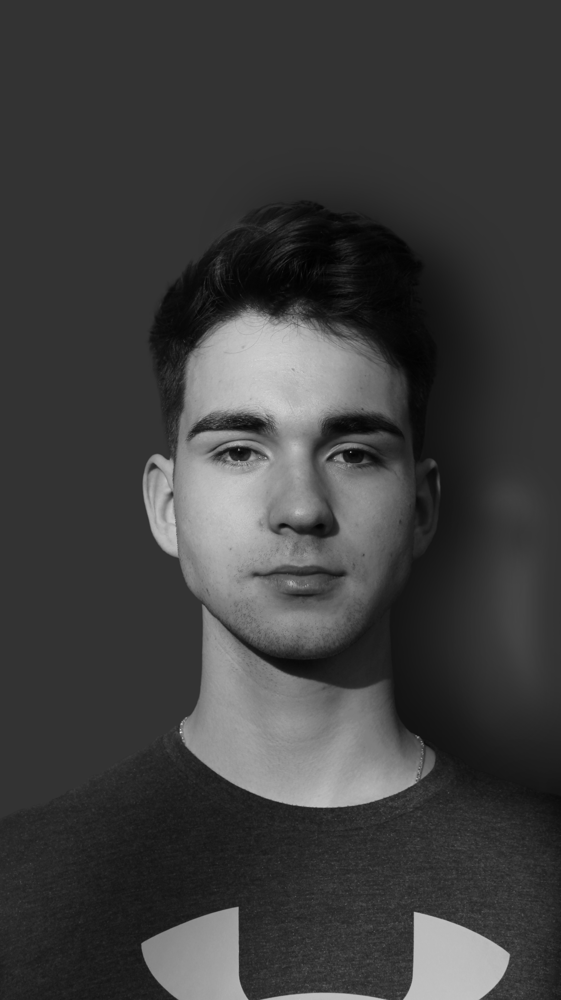

Ki is vagyok én? Papp Mátyás vagyok, Balassagyarmaton születtem egy kis városban. Fontos a mindennapjaimban a testmozgás és lelkesen próbálok ki és tanulok meg új dolgokat. Szeretek fotózni, de még bőven van hova fejlődnöm.
Tanulmányok:Vácon a Boronkay György Műszaki Technikum és Gimnázium jártam gimnáziumba és jelenleg a Budapesti Műszaki és Gazdaságtudományi Egyetem Gépész mérnöki kar hallgatója vagyok.